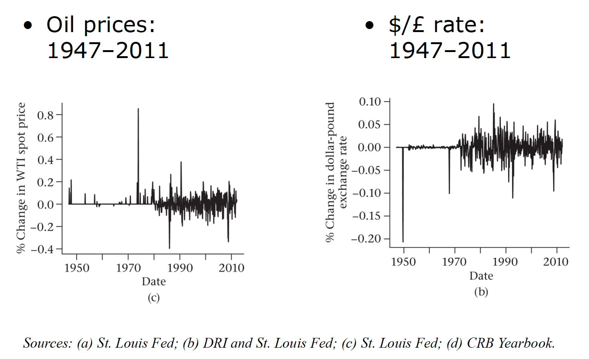

Week 1
Created: October 3, 2022 2:57 PM Last edited time: October 3, 2022 3:23 PM
What is a derivative?
Definition - A financial instrument that has a value determined by the price of something else
An agreement where you pay $1 if the price of corn is greater than $3 and receive $1 if the price of corn is less that $1 is a derivative
- This contract can be used to speculate on the price of corn or it can be used to reduce risk.
An overview of financial markets
The trading of a financial asset involves at least four discrete steps
- A buyer and a seller must locate one another and agree on a price
- The trade must be cleared (the obligations of each party are specified)
- The trade must be settled (the buyer and the seller must deliver the cash or securities necessary to satisfy their obligations in the required period of time)
- Ownership records are updated.
Much trading of financial claims takes place on organized exchanges. In the past, the exchange was solely a physical location where traders would buy and sell. Such in-person venues have largely been replaced by electronic networks that provide a virtual trading venue.
After a trade has taken place, a clearinghouse matches the buyers and sellers, keeping track of their obligations and payments. To facilitate these payments and to help manage credit risk, a derivatives clearinghouse typically imposes itself in the transaction, becoming the buyer to all sellers and the sellers to all buyers.
It is possible for large traders to trade many financial claims directly with a dealer bypassing organized exchanges. Such trading is said to occur in the over-the-counter (OTC) market.
Exchange activity is public and highly regulated.
Over-the-counter trading is not easy to observe or measure and is generally less regulated.
For many categories of financial claims, the value of OTC trading is greater than the value traded on exchanges.
There are at least four different measures of a market and its activity.
- Trading volume - This measure counts the number of financial claims that change hands.
- Market value - The market value is the sum of the market value of the claims that could be traded, without regard to whether they have traded.
- Notional value - Notional value measure the scale of a position, usually with reference to some underlying asset.
- Open interest (미결제약정) - Open interest measures the total number of contracts for which counterparties have a future obligation to perform. (have a position의 의미로, 앞으로 결제해야 할 의무계약을 가지고 있거나 만기 시 권리행사가 가능한 상태: ex) 선물의 매수 및 매도 상태)
Derivatives markets
The introduction of derivatives in a market often coincides with an increase in price risk in that market.
- Currencies were permitted to float in 1971 when the gold standard was officially abandoned. The modern market in financial derivatives began in 1972, when the Chicago Mercantile Exchange started trading futures contracts on seven currencies.
- OPEC’s 1973 reduction in the supply of oil was followed by high and variable oil prices.
- U.S. interest rates became more volatile following inflation and recessions in the 1970s.
- The market for natural gas has been deregulated gradually since 1978, resulting in a volatile market in recent years.
- The deregulation of electricity began during the 1990s.
Increased volatility led to new and big markets


Exchange traded contracts
Contracts proliferated in the last four decades

The role of financial markets
Insurance companies and individual communities/families have traditionally helped each other to share risks.
Markets make risk-sharing more efficient
- Diversifiable risks vanish
- Non-diversifiable risks are reallocated to those most willing to hold it.
The uses of derivatives
Risk management - Derivatives are a tool for companies and other users to reduce risks.
Speculation - Derivatives can serve as investment vehicles.
Reduce transaction costs - Sometimes derivatives provide a lower cost way to undertake a particular financial transaction.
Regulatory arbitrage - It is sometimes possible to circumvent regulatory restrictions, taxes, and accounting rules by trading derivatives.
Perspectives on derivatives
End users
- Corporations
- investment managers
- investors
Intermediaries
- Market-makers
- traders
Economic observers
- Regulators
- researchers

Financial engineering and security design
The construction of a financial product from other products
New securities can be designed by using existing securities
Financial engineering principles
- Facilitate hedging of existing positions
- Allow for creation of customized products
- Enable understanding of complex positions
- Render regulation less effective (혁신인가? 좋은 것일까요?)
Transaction costs and the bid-ask spread
Buying and selling a financial asset
- Brokers - commissions
- Market-makers - bid-ask spread

Short-selling
When price of an asset is expected to fall.
- First - borrow and sell an asset (get $$)
- Then - buy back and return the asset (pay $)
- If price fell in the mean time: profit $ = $$ - $
- The lender must be compensated for dividends received (lease-rate)

Why short-sell?
- speculation
- financing
- hedging
Credit risk in short-selling
- collateral and ‘haircut’
Interest received from lender on collateral
- Repo rate in bond markets